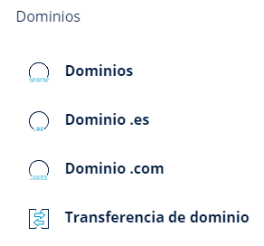
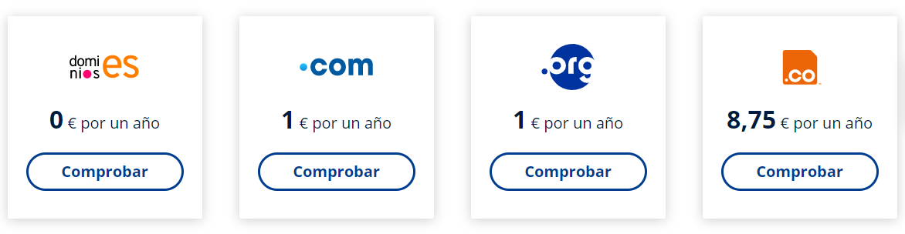
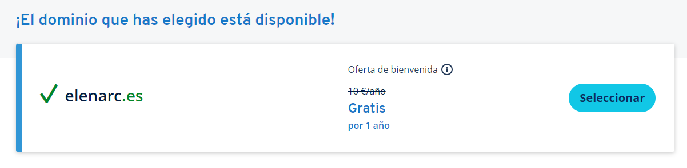
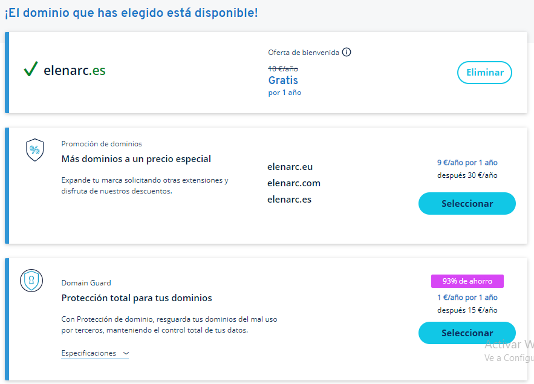
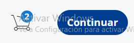
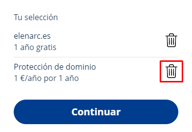
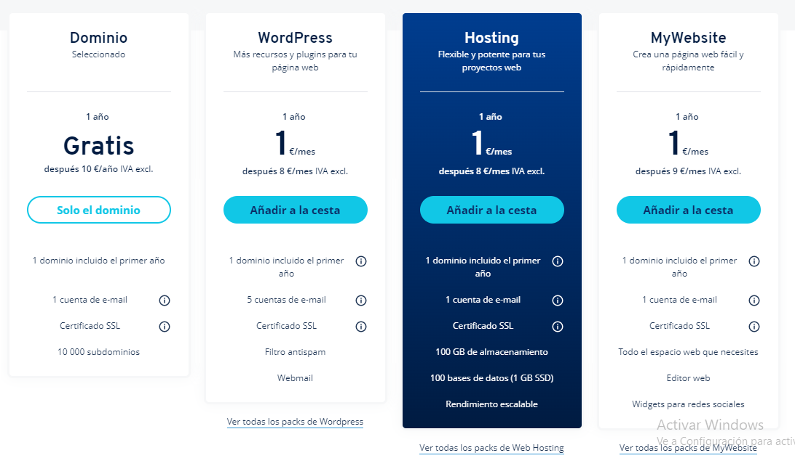
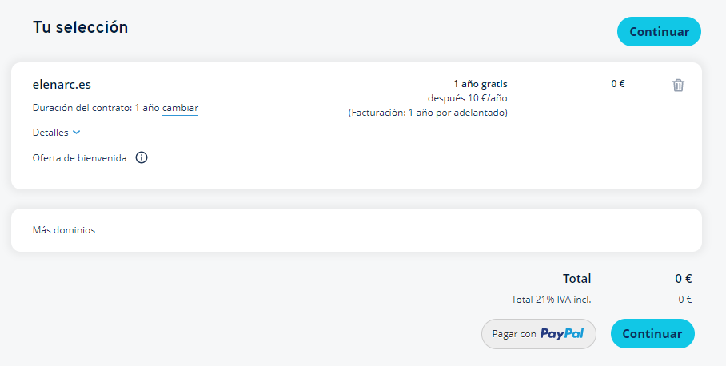

¿Dónde debo acceder desde la página principal de IONOS?
En el menú horizontal situado en la parte superior, se hará click en "Dominios", como indica la imagen.

Según el tipo de dominio que deseemos, podremos hacer click en cualquiera de los enlaces que se muestran
en
el desplegable. En nuestro caso, hemos pinchado en el primero: Dominios.
¿Qué plan debo seleccionar?

Bajando en la página web podremos encontrar distintos planes, para dominios .es, .com,
.org y .net.
Como nos resulta interesante la opción de 0€ al año por un dominio .es, vamos a seleccionar esa
opción.
¿Cómo busco el dominio?

Nos encontramos un buscador donde podremos introducir el dominio que deseemos.
Yo voy a comprobar si elenarc.es está disponible.

Mi dominio no está disponible
En la parte inferior se ofrecen dominios alternativos. Si tampoco te interesan, tendrás que realizar una
nueva búsqueda.
Mi dominio está disponible
Pulsaremos en el botón seleccionar en el dominio que deseemos y encontraremos las siguientes opciones:

Como podemos ver, la atractiva oferta de 0€ era ficticia, ya que no hay opción de continuar con el pago
si
no seleccionamos alguno de los otros paquetes disponibles.
Ya que no nos interesa tener otros dominios, seleccionaremos la protección de dominios por 1€/año.


Al añadir la protección de dominios nos aparece el carrito. Si queremos, podemos eliminar la protección e
intentar continuar por los 0€/año. Pulsaremos en la papelera y haremos click en continuar.
Elegir un paquete

IONOS ofrece hosting aparte de dominios, podemos seleccionar la opción que más nos guste.
Si solo te interesa obtener un dominio, continúa leyendo, en caso contrario visita
Servicio de hosting en IONOS para conocer qué ofrece IONOS como servidor de
hosting.
En nuestro caso seleccionaremos "Solo el dominio".
Efectuar la compra del dominio

Finalmente, sólo tendremos que completar el método de pago y aceptar con el botón "Continuar".